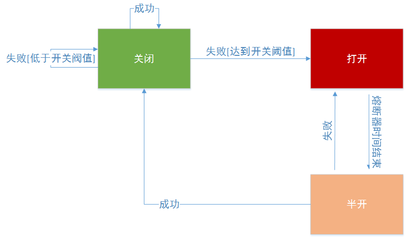

透彻理解Spring Cloud系列（三十）——Hystrix基本原理
从本章开始，我将讲解Spring Cloud Netflix中的另一个组件——Hystrix。关于Hystrix的基本原理和原生使用方法，我其实已经在另一个系列——《分布式系统从理论到实战》中详细讲解过了，读者可以自己去阅读一下。本章，我也会带大家回顾一下Hystrix的原理，为后续讲解Hystrix与Spring Cloud的整合做铺垫。
一、核心功能
Hystrix的核心功能有三个：资源隔离、熔断、降级。我们来一一看下它的基本原理。
1.1 资源隔离
Hystrix进行资源隔离的基本思想是：将对某一个依赖服务的所有调用请求，全部隔离在同一份资源池内，不会去用其它的资源，一共有两种实现方案：线程池隔离和信号量隔离。
线程池隔离
线程池隔离，是Hystrix最基本的资源隔离技术。Hystrix会将每一次服务调用请求，封装在一个Command对象内，每个Command都是使用线程池内的一个线程去执行的，这样就能跟调用线程本身隔离开来，避免因为外部依赖的接口调用超时，导致调用线程本身被卡死的情况。
线程池隔离适合绝大多数的场景，由于是采用线程池对依赖服务进行调用，所以能够对整个调用过程进行管控，比如处理timeout问题（Hystrix可以自定义超时时长），特别适合网络访问的场景；但是，线程池隔离不太适合超高并发场景，这种场景下每个服务实例每秒都有上千QPS，如果用线程池隔离，由于机器自身的总线程数不会太多，所以可能撑不住那么高的并发。
信号量隔离
除了线程池隔离，Hystrix还提供了信号量隔离技术。信号量（Semaphore），它跟线程池有什么区别呢？事实上，Hystrix使用的信号量其实就是 J.U.C 中的Semaphore。
如果采用信号量隔离技术，每接收一个请求，都是服务自身线程去直接调用依赖服务，信号量就相当于一道关卡，每个线程通过关卡后，信号量数量减1，当为0时不再允许线程通过，而是直接执行fallback逻辑并返回，说白了仅仅做了一个限流。
信号量隔离，适合对服务自身的一些复杂业务逻辑进行限流（比如推荐、搜索等），一般不涉及网络请求，不需要捕获timout之类的网络异常；不太适合对外部依赖的访问（比如调用其它微服务的某个接口或第三方接口）。
1.2 降级
Hystrix的fallback降级机制，会在以下情况下触发：
- 断路器处于打开状态，直接走降级流程；
- 线程池/队列/semaphore满了，请求被reject；
- 执行了请求，但是Command的run()或construct()方法抛出异常；
上述三种情况，都属于异常情况，Hystrix会发送异常事件到断路器中去进行统计，如果断路器发现异常事件的占比达到了一定的比例，会直接开启断路。
Fallback降级的逻辑通过HystrixCommand.getFallback或HystrixObservableCommand.resumeWithFallback方法实现：
public class GetBrandCommand extends HystrixCommand<String> {
// 品牌id
private final Long brandId;
public CommandHelloFailure(Long brandId) {
super(HystrixCommandGroupKey.Factory.asKey("BrandInfoService"));
this.brandId = brandId;
}
/**
* 这里总是报错，这样每次请求都会走降级逻辑
*/
@Override
protected String run() {
// 正式场景，这里调用品牌服务的接口
throw new RuntimeException("this command always fails");
}
/**
* 降级逻辑，从本地缓存中查找一个品牌名称
*/
@Override
protected String getFallback() {
return BrandCache.getBrandName(brandId);
}
}
注意：Fallback降级机制，本身也使用了资源隔离，我们可以通过fallback.isolation.semaphore.maxConcurrentRequests这个参数设置HystrixCommand.getFallback()的最大允许并发请求数，默认值是10，如果超出了这个最大值，那么直接被reject。
1.3 熔断
Hystrix熔断，其实就是打开了断路器（Circuit Breaker）。Hystrix在运行过程中会向每个commandKey对应的断路器报告成功、失败、超时和拒绝的状态，断路器会统计并维护这些数据，根据这些统计信息来确定断路器的状态：打开（open）、半开（half-open）、关闭（close）。

- 打开状态：后续的请求都会被截断，直接走fallback降级；
- 半开状态：默认每隔5s，尝试半开，放入一部分流量进来，相当于对依赖服务进行一次健康检查，如果服务恢复了，则断路器关闭，随后完全恢复调用；
- 关闭状态：断路器完全关闭，走正常的请求调用流程。
关闭->打开
如果配置了circuitBreaker.enabled = true，即允许断路器工作，那么初始时断路器的状态为关闭。当在一个时间窗口内（默认10s），请求流量超过了一定的阈值（默认20次），Hristrix就会去判断要不要断路，断路的依据是：异常请求数量占总请求量的比值是否超过某个阈值，此时断路器就会打开。
举个例子，假设时间窗口为10s，请求阈值为20次，如果10s内经过短路器的请求共10次，那么根本不会去判断要不要断路，即使这10次请求全部是异常的。如果10s内经过短路器的请求超过20次，同时其中异常的请求数量，占到了一定的比例，就会开启断路，断路器从close状态转换到open状态。此时，再有请求过来，都不会走后端服务，而是全部走fallback降级。
circuitBreaker.requestVolumeThreshold：请求总量阈值，默认20，一般根据系统平均QPS乘以10秒计算
circuitBreaker.errorThresholdPercentage：异常请求百分比，默认50，即50%，对于一些重要交易链路，比如支付链路，这个参数值可以设置得低一些，以便提前发现问题
打开->半开
当断路器开启一段时间之后（默认5s），会尝试放过去一部分流量进行试探，确定依赖服务是否恢复了。此时断路器的状态为变成半开（half-open）， 如果服务完全恢复了，则断路器状态会转换成关闭，随后完全恢复调用。
circuitBreaker.sleepWindowInMilliseconds：半开试探休眠时间，默认值5000ms。
总之，熔断参数的设置要根据系统实际的请求流量来设置，可以通过Hystix Metric工具观察生产环境的请求调用情况，计算出请求峰值QPS和平均QPS，据此设置合理的熔断时间窗口和阈值。
二、处理流程
我们来分析下下面这张图，它表述了一次Hystrix请求调用的完整底层逻辑，也包含了Hystrix的一些原生的核心组件：

2.1 创建请求
在Hystrix中，一个Command对象代表了对某个依赖服务的接口发起的一次请求，Command对象一共有两种：
- HystrixCommand：用于仅仅返回一个结果的调用
- HystrixObservableCommand：用于可能会返回多条结果的调用
2.2 请求调用
执行Command就可以发起一次对依赖服务接口的调用，一共有四个方法可以选择：execute()、queue()、observe()、toObservable()，其中execute()和queue()仅仅对HystrixCommand适用：
- execute()：同步调用，直到接口返回结果，或者抛出异常：
K value = command.execute(); - queue()：异步调用，返回一个Future，后面可以通过Future获取结果：
Future<K> fValue = command.queue(); - observe()：订阅一个Observable对象，Observable代表的是依赖服务接口返回的结果，最终获取到的是代表结果的Observable对象的拷贝对象：
Observable<K> ohValue = command.observe(); - toObservable()：返回一个Observable对象，如果我们订阅这个对象，就会执行command并且获取返回结果：
Observable<K> ocValue = command.toObservable();
execute()实际上会调用queue().get().queue()，接着会调用toObservable().toBlocking().toFuture()，也就是说，无论是哪种执行command的方式，最终都是依赖toObservable()去执行的。
2.3 检查请求缓存
如果这个command开启了请求缓存（request cache），且这个调用的结果在缓存中存在，那么直接从缓存中返回结果。
2.4 检查断路器
检查这个command对应的依赖服务是否开启了断路器（circuit breaker），如果断路器被打开了，那么hystrix就不会执行这个command，而是直接去执行fallback降级机制。
2.5 检查资源池
如果command对应的线程池/Semaphore已经满了，那么也不会执行command，而是直接去调用fallback降级机制。
2.6 执行请求
调用HystrixCommand.run()或HystrixObservableCommand.construct()来实际执行这个command，如果执行超时（timeout），那么command所在的线程就会抛出一个TimeoutException，此时会去执行fallback降级机制（执行出现异常也会执行fallback）。
2.7 健康检查
Hystrix会将对每一个依赖服务的调用事件（成功、失败、拒绝、超时等）发送给断路器（circuit breaker）。断路器就会对调用结果的次数进行统计，并根据这些统计次数来决定是否要进行断路。如果打开了断路器，那么在一段时间内就会直接断路，然后后续某次检查发现调用成功后，又会自动关闭断路器。
2.8 fallback降级
在以下几种情况中，hystrix会调用fallback降级机制：
- 断路器处于打开状态，直接走降级流程；
- 线程池/队列/semaphore满了，请求被reject；
- 执行了请求，但是Command的run()或construct()方法抛出异常或超时；
一般在降级机制中，都建议给出一些默认的返回值，比如静态的一些代码逻辑，或者从内存中的缓存中提取一些数据，尽量在这里不要再进行网络请求了。即使在降级中，一定要进行网络调用，也应该将那个调用放在一个Command中，进行隔离。
三、核心参数
采用线程池机制进行资源隔离时，需要考虑一个问题，如何进行线程池资源的划分？比如我们有一个缓存整合服务为，如果该服务依赖商品服务、广告服务，那么该如何分配广告服务和商品服务各自的线程池资源呢？
3.1 线程池大小
在生产环境中，对Hystrix线程池大小的设置，以及timeout超时时长的设置，都是至关重要的。一般来讲，如果要使用Hytrxix，肯定是要进行压测的，根据机器的测试结果，设置一个合理的线程池大小和超时时长。另一种方法是直接用Hystrix的默认值：timeout=1s, 线程数=10个，然后在运行过程中观察，逐步调优。
注意，timeout指的是web容器线程（比如tomcat线程）等待Hystrix线程调用后台服务的超时时长，这个概念不要理解错了。
理想情况下，Hystrix线程池数量可以根据以下公式计算：count = 每秒峰值访问次数 / (1000 / TP99 ) ≈ 每秒峰值访问次数 * 99%的访问延时（秒） + 预留buffer 。
比如对于某个依赖服务，峰值调用QPS是每秒50次，99%的请求在200ms左右响应，预留线程个数为5个，那么线程池大小可以设置为50 * 0.2 + 5 = 15 ，即15个线程每秒处理50次访问应该足够了。
Hystrix线程池中的线程数可以动态伸缩，以满足不同场景下的请求调用需求。
coreSize
设置线程池的大小，默认是10：HystrixThreadPoolProperties.Setter().withCoreSize(int value)
maximumSize
设置线程池的最大大小，只有在设置allowMaximumSizeToDivergeFromCoreSize的时候才能生效，默认是10：HystrixThreadPoolProperties.Setter().withMaximumSize(int value)
keepAliveTimeMinutes
设置保持存活的时间，单位是分钟，默认是1。如果设allowMaximumSizeToDivergeFromCoreSize为true，那么此时线程池大小是可以动态调整的，可以获取新的线程，也可以释放一些线程。当coreSize < maxSize，这个参数就设置了一个线程多长时间空闲之后，就会被释放掉：HystrixThreadPoolProperties.Setter().withKeepAliveTimeMinutes(int value)
3.2 缓冲队列大小
HystrixCommand除了支持execute这种同步调用方式外，还支持queue方式，即HystrixCommand.queue()，此时会先将调用请求放入一个队列中，等待后续异步执行。
等待队列主要用于应对一些突发短暂的波峰请求，比如正常情况下系统的QPS=100，TP99=150ms，那么我们设置线程池大小为15。但是，突发场景下，流量可能达到QPS150，所以我们可以将等待队列大小设置为50，以应对这种突发场景。
如果queue满了，线程池也满了，那再有请求过来就会被直接reject（被拒绝的请求会走fallback降级逻辑），queueSizeRejectionThreshold参数可以动态控制queue的最大大小，默认值是5，可以通过下面的方式手动设置：
HystrixThreadPoolProperties.Setter().withQueueSizeRejectionThreshold(int value)
3.3 timeout时长
一般timeout我们会设置成99.5%请求的访问延时，因为TP99如果是200ms的话，再加一次重试时间50ms，那么timeout时长就是250ms。
在高峰期，网络情况往往会较差，可能每次调用耗费的时长比平时要多个几十毫秒，如果timeout设置得太长，会导致web容器线程长时间hang住。
3.4 信号量数量
execution.isolation.semaphore.maxConcurrentRequests参数可以控制信号量的数量，超过这个数量的并发请求就会被reject。
默认值是10，可以设置的小一些，因为信号量是基于调用线程本身去执行command的，不能从timeout中抽离，如果设置的太大，有延时发生时，可能瞬间导致服务本身的线程资源被占满。
HystrixCommandProperties.Setter().withExecutionIsolationSemaphoreMaxConcurrentRequests(int value)
四、总结
本章，我对Hystrix的核心功能和基本原理作了讲解，主要就是回顾了我自己以前写的Hystrix相关的文章，这是后续讲解Hystrix与Spring Cloud整合的铺垫。下一章，我将讲解如何在Spring Cloud中使用Hystrix。